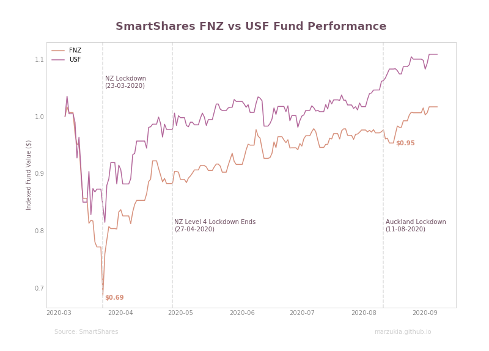

How Well Has New Zealand Handled COVID-19?

Table of Contents
At the beginning of March, I made the unfortunate decision of investing into two exchange-traded funds (ETFs) which were SmartShare’s FNZ (NZ Top 50) and USF (Fortune 500). It was unfortunate because the world decided to set itself on fire due to the COVID-19 pandemic.
Disclaimer: This post has comments regarding the personal investments I’ve made. This is absolutely not financial advice. If you have any questions regarding your personal circumstances, go talk to a financial advisor.
I purposefully made the decision that I would not look at my ill-timed investments. I did not want the temptation of ‘panic selling’ and I wanted to save myself the pain of seeing my hard-earned dollars disappear overnight. I never had any doubts that my funds would return to their starting position, it was more of a question of when it would return to their starting position.
Fund Performance as a Proxy #
Recently, I was reviewing how my funds had performed over the last 6 months. It had occured to me that my two investments in FNZ and USF could serve as a proxy or an indicator of how well New Zealand has faired during the COVID-19 pandemic, especially given it’s strict and rigid lockdown measures.
Given that I had equally split my investment in two different funds representing the ’top’ of both New Zealand and the USA, it seemed like a good way to compare how detrimentally COVID-19 has impacted each economy.
I acknowledge that this proxy has a very glaring and obvious bias which will skew the results. The bias being that COVID-19 is more likely to significantly impact smaller businesses and businesses that do not have the scale or means to absorb the financial burdens of this pandemic. Additionally, I’m cognizant some industries will be significantly more impacted than others, i.e. tourism versus agriculture.
The above diagram is the performance of both my FNZ and USF funds, indexed to a dollar-based on the first day of my investment (4 March 2020).
On 23 March 2020, the Prime Minister of New Zealand, Jacinda Ardern, announced that New Zealand would be going into a ‘Level 4’ lockdown from the 25th March 2020 for four weeks. This meant that all non-essential businesses and travel had to be ceased.
The effect of such an announcement naturally had a dramatic and significant impact on the FNZ, the dollar I had invested 19 days prior had plummeted by 31%. On 27 April 2020, New Zealand lifted its ‘Level 4’ lockdown which meant normalcy was returning, and by 8 June 2020, normalcy had returned in the form of a ‘Level 1’ lockdown.
New Zealand has handled this pandemic with great care, and have done a good job minimizing the devastating impacts it may have had. Even compared to countries with much more lax lockdown measures, the NZF rebounded at almost the same rate as the USF.
Additionally, due to confidence gained in how the first breakout was handled and the results gained, a second ‘Level 3’ lockdown occurring on the 11 August 2020 did not nearly have the same impact as the first lockdown. There was a ‘blip’ before it bounced back up a few days later.
The Performance That Matters #
It would be foolish to look solely at economic impact alone when considering how well a country has handled a pandemic. Unlike some other countries, New Zealand had made stamping out the virus early a key priority.
The results of these actions are evident in the graph below.

There is a stark difference in the two countries which had seemingly very similar economic impacts. The difference is that at the time of writing New Zealand has a total of 1,772 cases and 24 deaths, while the USA 6.26 million cases and 188 thousand deaths.
Whilst New Zealand has had some significant advantages in dealing with this pandemic, such as being an island nation, it does not detract from the cohesiveness and solidarity in which the country (on a whole) has dealt with COVID-19. With talks of a vaccine becoming increasingly more fervent, it’s becoming more likely that New Zealand will come out the other end of this pandemic significantly better off than other less fortunate countries.
It’s easy to get fall into the doom-and-gloom and sensationalist headlines, but it’s important to step back and recognise our achievement to date - I think New Zealand has absolutely nailed its COVID-19 response.